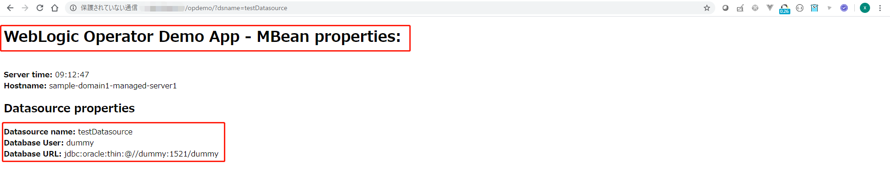

Oracle WebLogic Operator チュートリアル¶
JDBC Datasource parametersのオーバーライド¶
ドメインリソースをデプロイする前に、「永続ボリュームのドメイン」オプションと「イメージのドメイン」オプションの両方のWebLogicドメイン構成を変更できます：
- ドメインが永続ボリュームにある場合、WLSTまたはWDTを使用して構成を変更できます。
- どちらの場合でも、構成のオーバーライドを使用できます。
ドメインの実際のconfig.xmlまたはシステムリソースファイルを変更せずにWebLogicドメインホーム設定をカスタマイズするには、設定オーバーライド（状況構成とも呼ばれます）を使用します。たとえば、JDBCデータソースXMLモジュールのユーザー名とURLをオーバーライドして、別のデータベースを参照することができます。
オーバーライドを使用してドメインをカスタマイズできます。例えば、QAから実稼働に移動したり、異なるサイトに展開したり、同じサイトに複数回展開したりすることができます。
オーバーライドは、「構成のオーバーライド」と呼ばれる組み込みのWebLogic機能を活用します。これは、「状況構成」と呼ばれることがよくあります。状況構成は、WebLogicのconfig.xmlおよびシステムリソースモジュールのXMLファイルの構造によく似たXML形式のファイルで構成されます。さらに、これらのファイルの属性フィールドには、動詞の追加、置換、削除を埋め込んで、フィールドに必要なオーバーライドアクションを指定できます。
詳細についてはこちらをご確認ください。

JDBCオーバーライドの準備¶
Weblogic管理コンソールからDatasourceを追加します。
Lock & Editをクリックします。
Data Sourcesをクリックします。
NewからGeneric Data Sourceをクリックします。
NameにはtestDatasourceを入力して、Nextをクリックします。
デフォルトのままで、Nextをクリックします。
デフォルトのままで、Nextをクリックします。
実際の場合、正しい値を入力してください。こちらのワークショップでは、Databaseに接続しないし、次はオーバーライドにより上書きされるし、dummyを入力して、Nextをクリックします。
Finishをクリックします。
Activate Changesをクリックします。
サンプルアプリケーションのURLは以下の通りです：
http://EXTERNAL-IP/opdemo/?dsname=testDatasource
Datasource propertiesのところに先ほど登録した情報が表示されます。

JDBCオーバーライドの実施¶
オペレーターは、オーバーライドテンプレート用に別のファイル名でなければなりません。JDBCの場合、jdbc-MODULENAME.xmlである必要があります。 MODULENAMEは、元のconfig.xmlファイルで定義されたシステムリソースのMBean名に対応する必要があります。
Oracle Pipelinesを使用して作成したカスタムWebLogicイメージには、testDatasourceというJDBCデータソースがあります。したがって、jdbc-testDatasource.xmlという名前のテンプレートを作成する必要があります。
必要なファイルを作成する前に、まず、状況対応のJDBC設定テンプレートと version.txtファイルのみを含むディレクトリを作成します。
mkdir -p /u01/override
cat > /u01/override/jdbc-testDatasource.xml <<'EOF'
<?xml version='1.0' encoding='UTF-8'?>
<jdbc-data-source xmlns="http://xmlns.oracle.com/weblogic/jdbc-data-source"
xmlns:f="http://xmlns.oracle.com/weblogic/jdbc-data-source-fragment"
xmlns:s="http://xmlns.oracle.com/weblogic/situational-config">
<name>testDatasource</name>
<jdbc-driver-params>
<url f:combine-mode="replace">${secret:dbsecret.url}</url>
<properties>
<property>
<name>user</name>
<value f:combine-mode="replace">${secret:dbsecret.username}</value>
</property>
</properties>
</jdbc-driver-params>
</jdbc-data-source>
EOF
Note
このテンプレートには、JDBCユーザー名とURLパラメーターをオーバーライドするマクロが含まれています。この値はKubernetesシークレットから参照されたものです。
次に、演算子のバージョンを反映するversion.txtを作成します。
cat > /u01/override/version.txt <<EOF
2.0
EOF
kubectl -n sample-domain1-ns create cm jdbccm --from-file /u01/override
kubectl -n sample-domain1-ns label cm jdbccm weblogic.domainUID=sample-domain1
設定マップの名前(jdbccm)に注意してください。
以下のように作成した構成マップを確認できます：
kubectl describe cm jdbccm -n sample-domain1-ns
Name: jdbccm
Namespace: sample-domain1-ns
Labels: weblogic.domainUID=sample-domain1
Annotations: <none>
Data
====
jdbc-testDatasource.xml:
----
<?xml version='1.0' encoding='UTF-8'?>
<jdbc-data-source xmlns="http://xmlns.oracle.com/weblogic/jdbc-data-source"
xmlns:f="http://xmlns.oracle.com/weblogic/jdbc-data-source-fragment"
xmlns:s="http://xmlns.oracle.com/weblogic/situational-config">
<name>testDatasource</name>
<jdbc-driver-params>
<url f:combine-mode="replace">${secret:dbsecret.url}</url>
<properties>
<property>
<name>user</name>
<value f:combine-mode="replace">${secret:dbsecret.username}</value>
</property>
</properties>
</jdbc-driver-params>
</jdbc-data-source>
version.txt:
----
2.0
Events: <none>
最後に、JDBCユーザー名とURLパラメーターの値を含むシークレットを作成する必要があります。
シークレットを作成するには、次のkubectlコマンドを実行します：
kubectl -n sample-domain1-ns create secret generic dbsecret --from-literal=username=scott2 --from-literal=url=jdbc:oracle:thin:@test.db.example.com:1521/ORCLCDB
kubectl -n sample-domain1-ns label secret dbsecret weblogic.domainUID=sample-domain1
値(username=scott2, url=jdbc:oracle:thin:@test.db.example.com:1521/ORCLCDB)およびシークレットの名前(dbsecret)に注意してください。
変更を適用する前に、デモWebアプリケーションを使用して現在のJDBCパラメーターを確認します。次のURLを開きます：
http://EXTERNAL-IP/opdemo/?dsname=testDatasource
Datasource propertiesのところに現在の情報が表示されます。
データベースユーザーとデータベースURLの値に注意してください。
最後の手順は、ドメインリソース定義を変更して、オーバーライド構成マップとシークレットを含めることです。
kubectl edit domain sample-domain1 -n sample-domain1-ns
spec:セクションで次のエントリを追加します。インデントを適切に保つように注意してください:
spec:
configOverrideSecrets:
- dbsecret
configOverrides: jdbccm
ドメインリソースの変更を保存します。
WebLogicドメインを再起動します¶
オーバーライドの変更には、すべてのWebLogicポッドを再起動する必要があります。
ドメインで実行中のすべてのWebLogic Serverポッドを停止するには、ドメインリソースのserverStartPolicyをNEVERを設定して、保存してから、さらにserverStartPolicyをIF_NEEDEDを戻して保存します。
- ドメインリソース
serverStartPolicyをNEVERに設定します。
kubectl edit domain sample-domain1 -n sample-domain1-ns
- ポッドの状態を確認します：
kubectl get po -n sample-domain1-ns
NAME READY STATUS RESTARTS AGE
sample-domain1-admin-server 1/1 Terminating 0 75m
sample-domain1-create-weblogic-sample-domain-job-djk84 0/1 Completed 0 77m
sample-domain1-managed-server1 1/1 Terminating 0 73m
sample-domain1-managed-server2 1/1 Terminating 0 73m
sample-domain1-managed-server3 1/1 Terminating 0 26m
kubectl get po -n sample-domain1-ns
admin-serverとmanaged-serverのポッドがなくなります。
NAME READY STATUS RESTARTS AGE
sample-domain1-create-weblogic-sample-domain-job-djk84 0/1 Completed 0 78m
- ドメインリソース
serverStartPolicyをIF_NEEDEDに戻します。
kubectl edit domain sample-domain1 -n sample-domain1-ns
- ポッドのステータスを定期的に確認し、すべてのポッドが起動して
Runningになるまで待ちます：
kubectl get po -n sample-domain1-ns
admin-serverとmanaged-serverのポッドがRunningになります。
NAME READY STATUS RESTARTS AGE
sample-domain1-admin-server 1/1 Running 0 4m46s
sample-domain1-create-weblogic-sample-domain-job-djk84 0/1 Completed 0 128m
sample-domain1-managed-server1 1/1 Running 0 3m52s
sample-domain1-managed-server2 1/1 Running 0 3m52s
sample-domain1-managed-server3 1/1 Running 0 3m52s
デモWebアプリケーションを使用して、JDBCデータソースを再度確認します：
http://EXTERNAL-IP/opdemo/?dsname=testDatasource
次の変更を確認することができます：
- Database User: scott2
- Database URL: jdbc:oracle:thin:@test.db.example.com:1521/ORCLCDB
続いて、デプロイ済みアプリケーションの更新に進んでください。